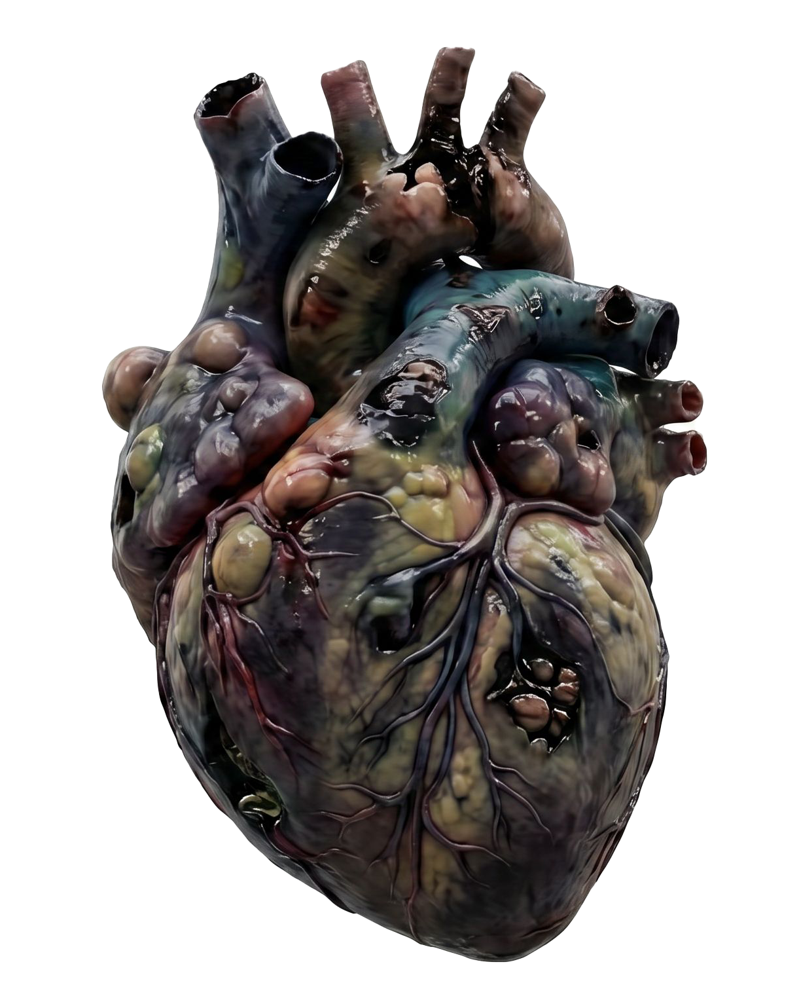
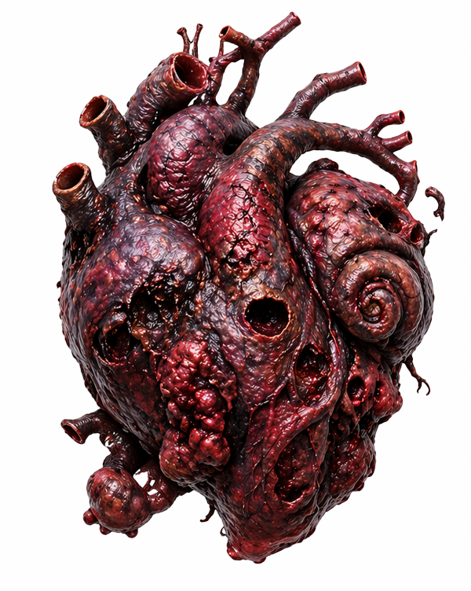
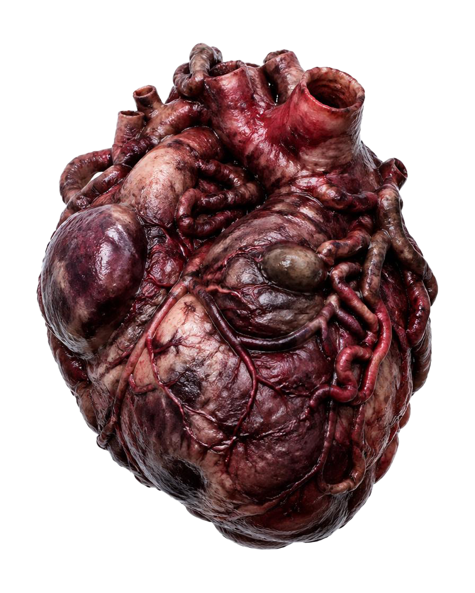
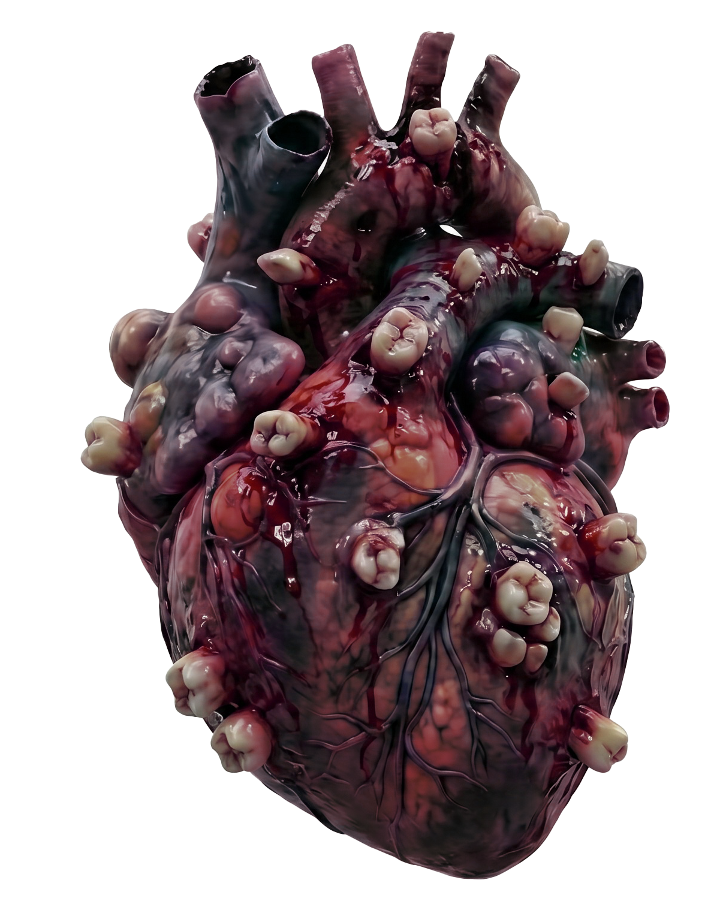
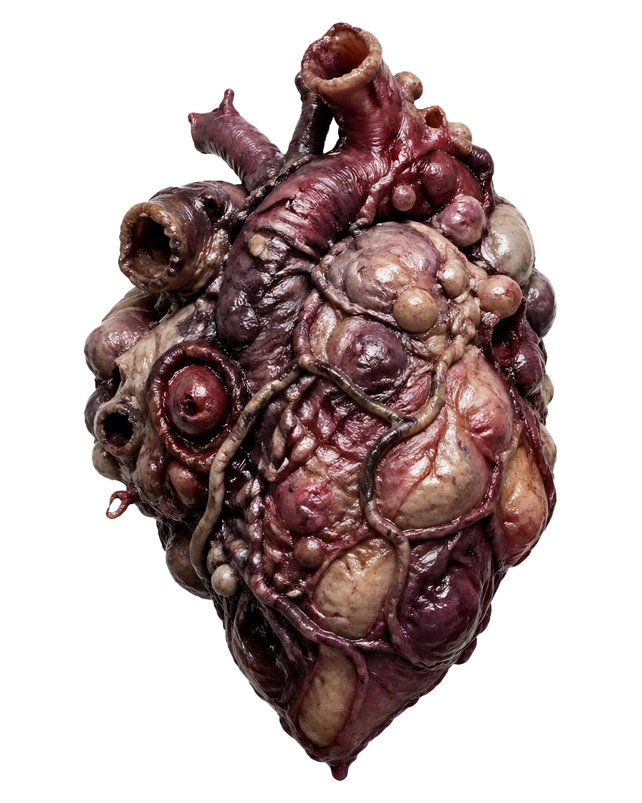
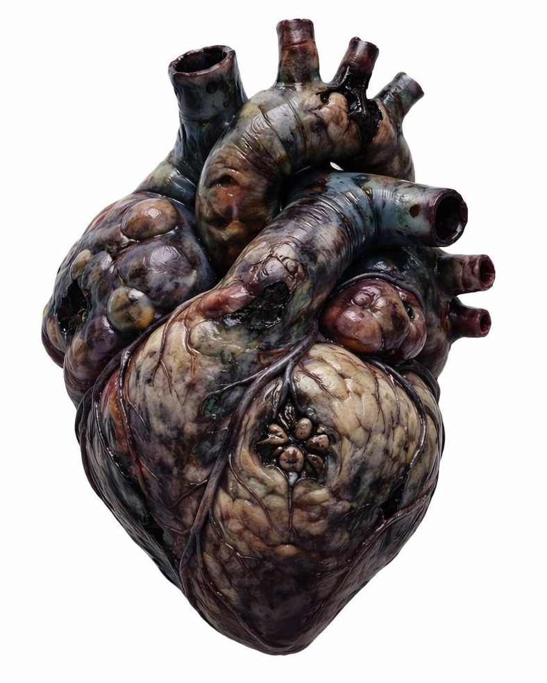
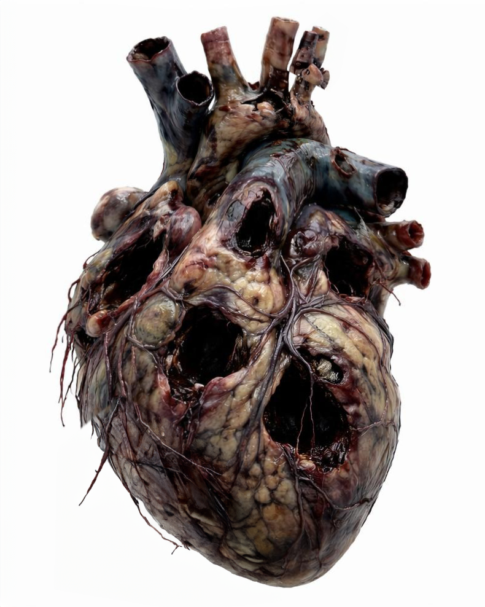

성격도 치료가 필요한 영역
반복되는 대인관계 문제, 조절되지 않는 언어 습관, 타인을 통제하려는 행동 패턴. 이러한 문제를 교정이 필요한 못된 심보 증후군으로 진단합니다. 당신을 힘들게 하는 성격의 문제는 단순한 성향이 아닌 심장 내 반응 구조의 왜곡에서 비롯된 치료가 필요한 상태입니다.

정상 심장

못된 심보 증후군 심장
비카인드 성형내과에서 전세계에 처음 선보이는 혁신
반복되는 대인관계 문제, 조절되지 않는 언어 습관, 타인을 통제하려는 행동 패턴. 이러한 문제를 교정이 필요한 못된 심보 증후군으로 진단합니다. 당신을 힘들게 하는 성격의 문제는 단순한 성향이 아닌 심장 내 반응 구조의 왜곡에서 비롯된 치료가 필요한 상태입니다.
정상 심장
못된 심보 증후군 심장
비카인드 성형내과는 개인의 성격을 다각도로 정밀 분석하여
부적응적 반응을 일으키는 성격의 구조적 원인을 진단하고 최적의 구조 재형성술(PSR)을 시행합니다.
수술은 사전 성격 분석 데이터와 심장의 외형 구조를 교차 비교하여 진행됩니다.
아래는 ‘못된 심보 증후군’에서 관찰되는 대표적인 심장 구조 유형입니다.








Personality Structural Reconstruction
성격 구조 재형성술은 단순한 교정이 아닌 정밀한 형상 재구성 과정으로 이루어집니다. 따라서 재발의 위험성을 줄이고 완전한 성격 성형을 성공시킵니다.
투명한 수술 과정
Structural Exposure & Layer Separation 심장 외막을 따라 감정 반응층과 행동 반응층을 분리합니다. 이 과정에서 성격 왜곡이 집중된 부위를 응력 집중 구간(Stress Concentration Zone)으로 식별합니다.
Cardiac Extraction & Thermal Stabilization 심장을 체외로 이동시킨 후 저온 안정화 챔버에서 조직의 변형을 억제합니다.
본격적인 성형 전, 심장 조직은 다음 상태로 조정됩니다. 반응성 완화 (Reactivity Reduction) 조직 유연성 확보 (Ductility Adjustment) 내부 응력 완화 (Stress Relief Conditioning) 이 단계는 이후 성형 정밀도를 좌우합니다.
비카인드 수술의 중심 단계입니다. 정밀 타격 기반 구조 재배열이 진행됩니다.
특수 제작된 의료용 헤머를 사용하여 문제 성향이 형성된 부위를 중심으로 국소 압축을 가합니다.
이 과정은 성격의 결 방향(Grain)을 재정렬하는 핵심 단계입니다.
심장의 특정 부위를 안쪽에서 바깥으로 밀어 올려 내부 반응 볼륨을 조정합니다. 공감 능력 부족 환자에서 주로 적용되는 단계입니다.
미세한 반복 타격을 통해 표면의 불균형한 반응 패턴을 균일화합니다. 감정 기복 완화, 감정 반응의 일관성 확보를 위한 단계입니다.
전체 구조를 재정렬하여 심장의 좌우 균형과 반응 대칭성을 맞춥니다. 과잉 반응 교정, 둔감 반응 교정을 위한 마무리 단계입니다.
성형된 구조를 고정하기 위한 단계입니다.
급속 냉각을 통해 재형성된 구조를 즉시 고정합니다. 반응 속도를 안정화하고 새롭게 설계된 구조 기억을 유지시키는 공정입니다.
담금질로 인해 발생할 수 있는 과도한 경직성과 취성을 완화합니다. 감정의 유연성을 회복시키고, 과도한 이성화 방지를 통해 인간미를 부여합니다.
성형된 심장을 재삽입 후 신경 반응과의 정밀 봉합을 진행합니다. 새로운 성격 구조가 신체 전반에 자연스럽게 적용되도록 유도하며 재이식을 진행합니다.
10~14일 입원하여 초기 성격 적응 관찰합니다. 사회적 반응 테스트를 진행하며 안정적으로 심장이 적응하는 과정을 케어합니다.
성격 구조 및 주요 지표 변화
반복적인 폭력 사건 및 충동 조절 장애
우리는 감정을 위로하지 않습니다. 비카인드는 인간 내부에 형성된 반응 구조를 분석하고, 가장 근본적인 형태부터 재설계합니다. 성격은 교정될 수 있습니다.